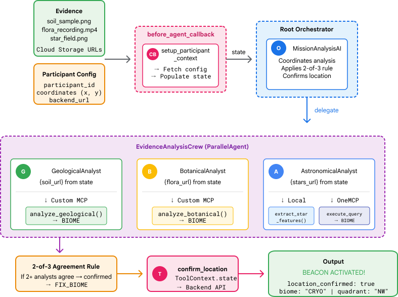
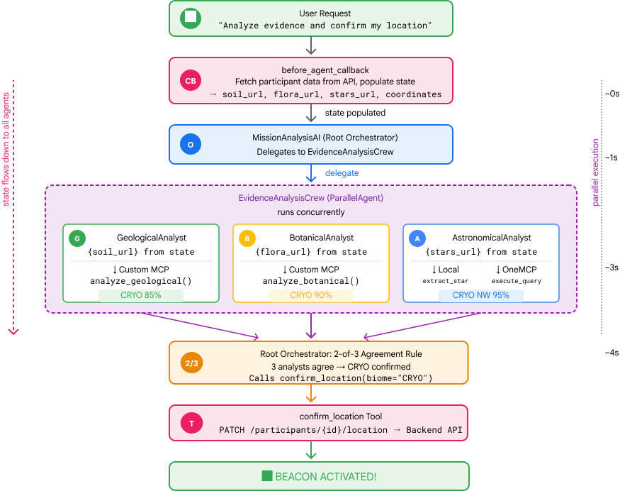

1. The Mission

You've identified yourself to the emergency AI and your beacon is now pulsing on the planetary map—but it's barely a flicker, lost among the static. The rescue teams scanning from orbit can see something at your coordinates, but they can't get a lock. The signal is too weak.
To boost your beacon to full strength, you need to confirm your exact location. The pod's navigation system is fried, but the crash scattered salvageable evidence across the landing site. Soil samples. Strange flora. A clear view of the alien night sky.
If you can analyze this evidence and determine which region of the planet you're in, the AI can triangulate your position and amplify the beacon signal. Then—maybe—someone will find you.
Time to put the pieces together.
Prerequisites
⚠️ This level requires completion of Level 0.
Before starting, verify you have:
- [ ]
config.jsonin the project root with your participant ID and coordinates - [ ] Your avatar visible on the world map
- [ ] Your beacon showing (dim) at your coordinates
If you haven't completed Level 0, start there first.
What You'll Build
In this level, you'll construct a multi-agent AI system that analyzes crash site evidence using parallel processing:


Learning Objectives
Concept | What You'll Learn |
Multi-Agent Systems | Build specialized agents with single responsibilities |
ParallelAgent | Compose independent agents to run concurrently |
before_agent_callback | Fetch configuration and set state before agent runs |
ToolContext | Access state values in tool functions |
Custom MCP Servers | Build tools with the imperative pattern (Python code on Cloud Run) |
OneMCP BigQuery | Connect to Google's managed MCP for BigQuery access |
Multimodal AI | Analyze images and video+audio with Gemini |
Agent Orchestration | Coordinate multiple agents with a root orchestrator |
Cloud Deployment | Deploy MCP server and agent to Cloud Run |
A2A Preparation | Structure agents for future agent-to-agent communication |
The Planet's Biomes
The planet surface is divided into four distinct biomes, each with unique characteristics:

Your coordinates determine which biome you crashed in. The evidence at your crash site reflects that biome's characteristics:
Biome | Quadrant | Geological Evidence | Botanical Evidence | Astronomical Evidence |
🧊 CRYO | NW (x<50, y≥50) | Frozen methane, ice crystals | Frost ferns, cryo-flora | Blue giant star |
🌋 VOLCANIC | NE (x≥50, y≥50) | Obsidian,ite deposits | Fire blooms, heat-resistant flora | Red dwarf binary |
💜 BIOLUMINESCENT | SW (x<50, y<50) | Phosphorescent soil | Glowing fungi, luminescent plants | Green pulsar |
🦴 FOSSILIZED | SE (x≥50, y<50) | Amber deposits, ite minerals | Petrified trees, ancient flora | Yellow sun |
Your job: build AI agents that can analyze the evidence and deduce which biome you're in.
2. Set Up Your Environment
Need Google Cloud Credits?
• If you are attending an instructor-led workshop: Your instructor will provide you with a credit code. Please use the one they provide.
• If you are working through this Codelab on your own: You can redeem a free Google Cloud credit to cover the workshop costs. Please click this link to get a credit and follow the steps in the video guide below to apply it to your account.
Run the Environment Setup Script
Before generating evidence, you need to enable the required Google Cloud APIs, including OneMCP for BigQuery which provides managed MCP access to BigQuery.
👉💻 Run the environment setup script:
cd $HOME/way-back-home/level_1
chmod +x setup/setup_env.sh
./setup/setup_env.sh
You should see output like:
================================================================
Level 1: Environment Setup
================================================================
Project: your-project-id
[1/6] Enabling core Google Cloud APIs...
✓ Vertex AI API enabled
✓ Cloud Run API enabled
✓ Cloud Build API enabled
✓ BigQuery API enabled
✓ Artifact Registry API enabled
✓ IAM API enabled
[2/6] Enabling OneMCP BigQuery (Managed MCP)...
✓ OneMCP BigQuery enabled
[3/6] Setting up service account and IAM permissions...
✓ Service account 'way-back-home-sa' created
✓ Vertex AI User role granted
✓ Cloud Run Invoker role granted
✓ BigQuery User role granted
✓ BigQuery Data Viewer role granted
✓ Storage Object Viewer role granted
[4/6] Configuring Cloud Build IAM for deployments...
✓ Cloud Build can now deploy services as way-back-home-sa
✓ Cloud Run Admin role granted to Compute SA
[5/6] Creating Artifact Registry repository...
✓ Repository 'way-back-home' created
[6/6] Creating environment variables file...
Found PARTICIPANT_ID in config.json: abc123...
✓ Created ../set_env.sh
================================================================
✅ Environment Setup Complete!
================================================================
Source Environment Variables
👉💻 Source the environment variables:
source $HOME/way-back-home/set_env.sh
Install Dependencies
👉💻 Install the Level 1 Python dependencies:
cd $HOME/way-back-home/level_1
uv sync
Set Up the Star Catalog
👉💻 Set up the star catalog in BigQuery:
uv run python setup/setup_star_catalog.py
You should see:
Setting up star catalog in project: your-project-id
==================================================
✓ Dataset way_back_home already exists
✓ Created table star_catalog
✓ Inserted 12 rows into star_catalog
📊 Star Catalog Summary:
----------------------------------------
NE (VOLCANIC): 3 stellar patterns
NW (CRYO): 3 stellar patterns
SE (FOSSILIZED): 3 stellar patterns
SW (BIOLUMINESCENT): 3 stellar patterns
----------------------------------------
✓ Star catalog is ready for triangulation queries
==================================================
✅ Star catalog setup complete!
3. Generate Crash Site Evidence
Now generate personalized crash site evidence based on your coordinates.
Run the Evidence Generator
👉💻 From the level_1 directory, run:
cd $HOME/way-back-home/level_1
uv run python generate_evidence.py
You should see output like:
✓ Welcome back, Explorer_Aria!
Coordinates: (23, 67)
Ready to analyze your crash site.
📍 Crash site analysis initiated...
Generating evidence for your location...
🔬 Generating soil sample...
✓ Soil sample captured: outputs/soil_sample.png
✨ Capturing star field...
✓ Star field captured: outputs/star_field.png
🌿 Recording flora activity...
(This may take 1-2 minutes for video generation)
Generating video...
Generating video...
Generating video...
✓ Flora recorded: outputs/flora_recording.mp4
📤 Uploading evidence to Mission Control...
✓ Config updated with evidence URLs
==================================================
✅ Evidence generation complete!
==================================================
Review Your Evidence
👉 Take a moment to look at your generated evidence files in the outputs/ folder. Each one reflects the biome characteristics of your crash location—though you won't know which biome until your AI agents analyze them!
Your generated evidence may look something like this depending on your location:


4. Build the Custom MCP Server
Your escape pod's onboard analysis systems are fried, but the raw sensor data survived the crash. You'll build an MCP server with FastMCP that provides geological and botanical analysis tools.
Create the Geological Analysis Tool
This tool analyzes soil sample images to identify mineral composition.
👉✏️ Open $HOME/way-back-home/level_1/mcp-server/main.py and find #REPLACE-GEOLOGICAL-TOOL. Replace it with:
GEOLOGICAL_PROMPT = """Analyze this alien soil sample image.
Classify the PRIMARY characteristic (choose exactly one):
1. CRYO - Frozen/icy minerals, crystalline structures, frost patterns,
blue-white coloration, permafrost indicators
2. VOLCANIC - Volcanic rock, basalt, obsidian, sulfur deposits,
red-orange minerals, heat-formed crystite structures
3. BIOLUMINESCENT - Glowing particles, phosphorescent minerals,
organic-mineral hybrids, purple-green luminescence
4. FOSSILIZED - Ancient compressed minerals, amber deposits,
petrified organic matter, golden-brown stratification
Respond ONLY with valid JSON (no markdown, no explanation):
{
"biome": "CRYO|VOLCANIC|BIOLUMINESCENT|FOSSILIZED",
"confidence": 0.0-1.0,
"minerals_detected": ["mineral1", "mineral2"],
"description": "Brief description of what you observe"
}
"""
@mcp.tool()
def analyze_geological(
image_url: Annotated[
str,
Field(description="Cloud Storage URL (gs://...) of the soil sample image")
]
) -> dict:
"""
Analyzes a soil sample image to identify mineral composition and classify the planetary biome.
Args:
image_url: Cloud Storage URL of the soil sample image (gs://bucket/path/image.png)
Returns:
dict with biome, confidence, minerals_detected, and description
"""
logger.info(f">>> 🔬 Tool: 'analyze_geological' called for '{image_url}'")
try:
response = client.models.generate_content(
model="gemini-2.5-flash",
contents=[
GEOLOGICAL_PROMPT,
genai_types.Part.from_uri(file_uri=image_url, mime_type="image/png")
]
)
result = parse_json_response(response.text)
logger.info(f" ✓ Geological analysis complete: {result.get('biome', 'UNKNOWN')}")
return result
except Exception as e:
logger.error(f" ✗ Geological analysis failed: {str(e)}")
return {"error": str(e), "biome": "UNKNOWN", "confidence": 0.0}
Create the Botanical Analysis Tool
This tool analyzes flora video recordings—including the audio track.
👉✏️ In the same file ($HOME/way-back-home/level_1/mcp-server/main.py), find #REPLACE-BOTANICAL-TOOL and replace it with:
BOTANICAL_PROMPT = """Analyze this alien flora video recording.
Pay attention to BOTH:
1. VISUAL elements: Plant appearance, movement patterns, colors, bioluminescence
2. AUDIO elements: Ambient sounds, rustling, organic noises, frequencies
Classify the PRIMARY biome (choose exactly one):
1. CRYO - Crystalline ice-plants, frost-covered vegetation,
crackling/tinkling sounds, slow brittle movements, blue-white flora
2. VOLCANIC - Heat-resistant plants, sulfur-adapted species,
hissing/bubbling sounds, smoke-filtering vegetation, red-orange flora
3. BIOLUMINESCENT - Glowing plants, pulsing light patterns,
humming/resonating sounds, reactive to stimuli, purple-green flora
4. FOSSILIZED - Ancient petrified plants, amber-preserved specimens,
deep resonant sounds, minimal movement, golden-brown flora
Respond ONLY with valid JSON (no markdown, no explanation):
{
"biome": "CRYO|VOLCANIC|BIOLUMINESCENT|FOSSILIZED",
"confidence": 0.0-1.0,
"species_detected": ["species1", "species2"],
"audio_signatures": ["sound1", "sound2"],
"description": "Brief description of visual and audio observations"
}
"""
@mcp.tool()
def analyze_botanical(
video_url: Annotated[
str,
Field(description="Cloud Storage URL (gs://...) of the flora video recording")
]
) -> dict:
"""
Analyzes a flora video recording (visual + audio) to identify plant species and classify the biome.
Args:
video_url: Cloud Storage URL of the flora video (gs://bucket/path/video.mp4)
Returns:
dict with biome, confidence, species_detected, audio_signatures, and description
"""
logger.info(f">>> 🌿 Tool: 'analyze_botanical' called for '{video_url}'")
try:
response = client.models.generate_content(
model="gemini-2.5-flash",
contents=[
BOTANICAL_PROMPT,
genai_types.Part.from_uri(file_uri=video_url, mime_type="video/mp4")
]
)
result = parse_json_response(response.text)
logger.info(f" ✓ Botanical analysis complete: {result.get('biome', 'UNKNOWN')}")
return result
except Exception as e:
logger.error(f" ✗ Botanical analysis failed: {str(e)}")
return {"error": str(e), "biome": "UNKNOWN", "confidence": 0.0}
Test MCP Server Locally
👉💻 Test the MCP server:
cd $HOME/way-back-home/level_1/mcp-server
pip install -r requirements.txt
python main.py
You should see:
[INFO] Initialized Gemini client for project: your-project-id
[INFO] 🚀 Location Analyzer MCP Server starting on port 8080
[INFO] 📍 MCP endpoint: http://0.0.0.0:8080/mcp
[INFO] 🔧 Tools: analyze_geological, analyze_botanical

The FastMCP server is now running with HTTP transport. Press Ctrl+C to stop.
Deploy MCP Server to Cloud Run
👉💻 Deploy:
cd $HOME/way-back-home/level_1/mcp-server
source $HOME/way-back-home/set_env.sh
gcloud builds submit . \
--config=cloudbuild.yaml \
--substitutions=_REGION="$REGION",_REPO_NAME="$REPO_NAME",_SERVICE_ACCOUNT="$SERVICE_ACCOUNT"
Save the Service URL
👉💻 Save the service URL:
export MCP_SERVER_URL=$(gcloud run services describe location-analyzer \
--region=$REGION --format='value(status.url)')
echo "MCP Server URL: $MCP_SERVER_URL"
# Add to set_env.sh for later use
echo "export MCP_SERVER_URL=\"$MCP_SERVER_URL\"" >> $HOME/way-back-home/set_env.sh
5. Build the Specialist Agents
Now you'll create three specialist agents, each with a single responsibility.
Create the Geological Analyst Agent
👉✏️ Open agent/agents/geological_analyst.py and find #REPLACE-GEOLOGICAL-AGENT. Replace it with:
from google.adk.agents import Agent
from agent.tools.mcp_tools import get_geological_tool
geological_analyst = Agent(
name="GeologicalAnalyst",
model="gemini-2.5-flash",
description="Analyzes soil samples to classify planetary biome based on mineral composition.",
instruction="""You are a geological specialist analyzing alien soil samples.
## YOUR EVIDENCE TO ANALYZE
Soil sample URL: {soil_url}
## YOUR TASK
1. Call the analyze_geological tool with the soil sample URL above
2. Examine the results for mineral composition and biome indicators
3. Report your findings clearly
The four possible biomes are:
- CRYO: Frozen, icy minerals, blue/white coloring
- VOLCANIC: Magma, obsidian, volcanic rock, red/orange coloring
- BIOLUMINESCENT: Glowing, phosphorescent minerals, purple/green
- FOSSILIZED: Amber, ancient preserved matter, golden/brown
## REPORTING FORMAT
Always report your classification clearly:
"GEOLOGICAL ANALYSIS: [BIOME] (confidence: X%)"
Include a brief description of what you observed in the sample.
## IMPORTANT
- You do NOT synthesize with other evidence
- You do NOT confirm locations
- Just analyze the soil sample and report what you find
- Call the tool immediately with the URL provided above""",
tools=[get_geological_tool()]
)
Create the Botanical Analyst Agent
👉✏️ Open agent/agents/botanical_analyst.py and find #REPLACE-BOTANICAL-AGENT. Replace it with:
from google.adk.agents import Agent
from agent.tools.mcp_tools import get_botanical_tool
botanical_analyst = Agent(
name="BotanicalAnalyst",
model="gemini-2.5-flash",
description="Analyzes flora recordings to classify planetary biome based on plant life and ambient sounds.",
instruction="""You are a botanical specialist analyzing alien flora recordings.
## YOUR EVIDENCE TO ANALYZE
Flora recording URL: {flora_url}
## YOUR TASK
1. Call the analyze_botanical tool with the flora recording URL above
2. Pay attention to BOTH visual AND audio elements in the recording
3. Report your findings clearly
The four possible biomes are:
- CRYO: Frost ferns, crystalline plants, cold wind sounds, crackling ice
- VOLCANIC: Fire blooms, heat-resistant flora, crackling/hissing sounds
- BIOLUMINESCENT: Glowing fungi, luminescent plants, ethereal hum, chiming
- FOSSILIZED: Petrified trees, ancient formations, deep resonant sounds
## REPORTING FORMAT
Always report your classification clearly:
"BOTANICAL ANALYSIS: [BIOME] (confidence: X%)"
Include descriptions of what you SAW and what you HEARD.
## IMPORTANT
- You do NOT synthesize with other evidence
- You do NOT confirm locations
- Just analyze the flora recording and report what you find
- Call the tool immediately with the URL provided above""",
tools=[get_botanical_tool()]
)
Create the Astronomical Analyst Agent
This agent uses a different approach with two tool patterns:
- Local FunctionTool: Gemini Vision to extract star features
- OneMCP BigQuery: Query the star catalog via Google's managed MCP
👉✏️ Open agent/agents/astronomical_analyst.py and find #REPLACE-ASTRONOMICAL-AGENT. Replace it with:
from google.adk.agents import Agent
from agent.tools.star_tools import (
extract_star_features_tool,
get_bigquery_mcp_toolset,
)
# Get the BigQuery MCP toolset
bigquery_toolset = get_bigquery_mcp_toolset()
astronomical_analyst = Agent(
name="AstronomicalAnalyst",
model="gemini-2.5-flash",
description="Analyzes star field images and queries the star catalog via OneMCP BigQuery.",
instruction="""You are an astronomical specialist analyzing alien night skies.
## YOUR EVIDENCE TO ANALYZE
Star field URL: {stars_url}
## YOUR TWO TOOLS
### TOOL 1: extract_star_features (Local Gemini Vision)
Call this FIRST with the star field URL above.
Returns: "primary_star": "...", "nebula_type": "...", "stellar_color": "..."
### TOOL 2: BigQuery MCP (execute_query)
Call this SECOND with the results from Tool 1.
Use this exact SQL query (replace the placeholders with values from Step 1):
SELECT quadrant, biome, primary_star, nebula_type
FROM `{project_id}.way_back_home.star_catalog`
WHERE LOWER(primary_star) = LOWER('PRIMARY_STAR_FROM_STEP_1')
AND LOWER(nebula_type) = LOWER('NEBULA_TYPE_FROM_STEP_1')
LIMIT 1
## YOUR WORKFLOW
1. Call extract_star_features with: {stars_url}
2. Get the primary_star and nebula_type from the result
3. Call execute_query with the SQL above (replacing placeholders)
4. Report the biome and quadrant from the query result
## BIOME REFERENCE
| Biome | Quadrant | Primary Star | Nebula Type |
|-------|----------|--------------|-------------|
| CRYO | NW | blue_giant | ice_blue |
| VOLCANIC | NE | red_dwarf_binary | fire |
| BIOLUMINESCENT | SW | green_pulsar | purple_magenta |
| FOSSILIZED | SE | yellow_sun | golden |
## REPORTING FORMAT
"ASTRONOMICAL ANALYSIS: [BIOME] in [QUADRANT] quadrant (confidence: X%)"
Include a description of the stellar features you observed.
## IMPORTANT
- You do NOT synthesize with other evidence
- You do NOT confirm locations
- Just analyze the stars and report what you find
- Start by calling extract_star_features with the URL above""",
tools=[extract_star_features_tool, bigquery_toolset]
)
6. Build the MCP Tool Connections
Now you'll create the Python wrappers that let your ADK agents talk to MCP servers. These wrappers handle the connection lifecycle — establishing sessions, invoking tools, and parsing responses.
Create MCP Tool Connection (Custom MCP)
This connects to your custom FastMCP server deployed on Cloud Run.
👉✏️ Open agent/tools/mcp_tools.py and find #REPLACE-MCP-TOOL-CONNECTION. Replace it with:
import os
import logging
from google.adk.tools.mcp_tool.mcp_toolset import MCPToolset
from google.adk.tools.mcp_tool.mcp_session_manager import StreamableHTTPConnectionParams
logger = logging.getLogger(__name__)
MCP_SERVER_URL = os.environ.get("MCP_SERVER_URL")
_mcp_toolset = None
def get_mcp_toolset():
"""Get the MCPToolset connected to the location-analyzer server."""
global _mcp_toolset
if _mcp_toolset is not None:
return _mcp_toolset
if not MCP_SERVER_URL:
raise ValueError(
"MCP_SERVER_URL not set. Please run:\n"
" export MCP_SERVER_URL='https://location-analyzer-xxx.a.run.app'"
)
# FastMCP exposes MCP protocol at /mcp endpoint
mcp_endpoint = f"{MCP_SERVER_URL}/mcp"
logger.info(f"[MCP Tools] Connecting to: {mcp_endpoint}")
_mcp_toolset = MCPToolset(
connection_params=StreamableHTTPConnectionParams(
url=mcp_endpoint,
timeout=120, # 2 minutes for Gemini analysis
)
)
return _mcp_toolset
def get_geological_tool():
"""Get the geological analysis tool from the MCP server."""
return get_mcp_toolset()
def get_botanical_tool():
"""Get the botanical analysis tool from the MCP server."""
return get_mcp_toolset()
Create Star Analysis Tools (OneMCP BigQuery)
The star catalog you loaded earlier into BigQuery contains stellar patterns for each biome. Instead of writing BigQuery client code to query it, we connect to Google's OneMCP BigQuery server — which exposes BigQuery's execute_query capability as an MCP tool that any ADK agent can use directly.
👉✏️ Open agent/tools/star_tools.py and find #REPLACE-STAR-TOOLS. Replace it with:
import os
import json
import logging
from google import genai
from google.genai import types as genai_types
from google.adk.tools import FunctionTool
from google.adk.tools.mcp_tool.mcp_toolset import MCPToolset
from google.adk.tools.mcp_tool.mcp_session_manager import StreamableHTTPConnectionParams
import google.auth
import google.auth.transport.requests
logger = logging.getLogger(__name__)
# =============================================================================
# CONFIGURATION - Environment variables only
# =============================================================================
PROJECT_ID = os.environ.get("GOOGLE_CLOUD_PROJECT", "")
if not PROJECT_ID:
logger.warning("[Star Tools] GOOGLE_CLOUD_PROJECT not set")
# Initialize Gemini client for star feature extraction
genai_client = genai.Client(
vertexai=True,
project=PROJECT_ID or "placeholder",
location=os.environ.get("GOOGLE_CLOUD_LOCATION", "us-central1")
)
logger.info(f"[Star Tools] Initialized for project: {PROJECT_ID}")
# =============================================================================
# OneMCP BigQuery Connection
# =============================================================================
BIGQUERY_MCP_URL = "https://bigquery.googleapis.com/mcp"
_bigquery_toolset = None
def get_bigquery_mcp_toolset():
"""
Get the MCPToolset connected to Google's BigQuery MCP server.
This uses OAuth 2.0 authentication with Application Default Credentials.
The toolset provides access to BigQuery's pre-built MCP tools like:
- execute_query: Run SQL queries
- list_datasets: List available datasets
- get_table_schema: Get table structure
"""
global _bigquery_toolset
if _bigquery_toolset is not None:
return _bigquery_toolset
logger.info("[Star Tools] Connecting to OneMCP BigQuery...")
# Get OAuth credentials
credentials, project_id = google.auth.default(
scopes=["https://www.googleapis.com/auth/bigquery"]
)
# Refresh to get a valid token
credentials.refresh(google.auth.transport.requests.Request())
oauth_token = credentials.token
# Configure headers for BigQuery MCP
headers = {
"Authorization": f"Bearer {oauth_token}",
"x-goog-user-project": project_id or PROJECT_ID
}
# Create MCPToolset with StreamableHTTP connection
_bigquery_toolset = MCPToolset(
connection_params=StreamableHTTPConnectionParams(
url=BIGQUERY_MCP_URL,
headers=headers
)
)
logger.info("[Star Tools] Connected to BigQuery MCP")
return _bigquery_toolset
# =============================================================================
# Local FunctionTool: Star Feature Extraction
# =============================================================================
# This is a LOCAL tool that calls Gemini directly - demonstrating that
# you can mix local FunctionTools with MCP tools in the same agent.
STAR_EXTRACTION_PROMPT = """Analyze this alien night sky image and extract stellar features.
Identify:
1. PRIMARY STAR TYPE: blue_giant, red_dwarf, red_dwarf_binary, green_pulsar, yellow_sun, etc.
2. NEBULA TYPE: ice_blue, fire, purple_magenta, golden, etc.
3. STELLAR COLOR: blue_white, red_orange, green_purple, yellow_gold, etc.
Respond ONLY with valid JSON:
{"primary_star": "...", "nebula_type": "...", "stellar_color": "...", "description": "..."}
"""
def _parse_json_response(text: str) -> dict:
"""Parse JSON from Gemini response, handling markdown formatting."""
cleaned = text.strip()
if cleaned.startswith("```json"):
cleaned = cleaned[7:]
elif cleaned.startswith("```"):
cleaned = cleaned[3:]
if cleaned.endswith("```"):
cleaned = cleaned[:-3]
cleaned = cleaned.strip()
try:
return json.loads(cleaned)
except json.JSONDecodeError as e:
logger.error(f"Failed to parse JSON: {e}")
return {"error": f"Failed to parse response: {str(e)}"}
def extract_star_features(image_url: str) -> dict:
"""
Extract stellar features from a star field image using Gemini Vision.
This is a LOCAL FunctionTool - we call Gemini directly, not through MCP.
The agent will use this alongside the BigQuery MCP tools.
"""
logger.info(f"[Stars] Extracting features from: {image_url}")
response = genai_client.models.generate_content(
model="gemini-2.5-flash",
contents=[
STAR_EXTRACTION_PROMPT,
genai_types.Part.from_uri(file_uri=image_url, mime_type="image/png")
]
)
result = _parse_json_response(response.text)
logger.info(f"[Stars] Extracted: primary_star={result.get('primary_star')}")
return result
# Create the local FunctionTool
extract_star_features_tool = FunctionTool(extract_star_features)
7. Build the Orchestrator
Now create the parallel crew and root orchestrator that coordinates everything.
Create the Parallel Analysis Crew
Why run the three specialists in parallel? Because they are completely independent — the geological analyst doesn't need to wait for the botanical analyst's results, and vice versa. Each specialist analyzes a different piece of evidence using different tools. A ParallelAgent runs all three concurrently, reducing total analysis time from ~30s (sequential) to ~10s (parallel).
👉✏️ Open agent/agent.py and find #REPLACE-PARALLEL-CREW. Replace it with:
import os
import logging
import httpx
from google.adk.agents import Agent, ParallelAgent
from google.adk.agents.callback_context import CallbackContext
# Import specialist agents
from agent.agents.geological_analyst import geological_analyst
from agent.agents.botanical_analyst import botanical_analyst
from agent.agents.astronomical_analyst import astronomical_analyst
# Import confirmation tool
from agent.tools.confirm_tools import confirm_location_tool
logger = logging.getLogger(__name__)
# =============================================================================
# BEFORE AGENT CALLBACK - Fetches config and sets state
# =============================================================================
async def setup_participant_context(callback_context: CallbackContext) -> None:
"""
Fetch participant configuration and populate state for all agents.
This callback:
1. Reads PARTICIPANT_ID and BACKEND_URL from environment
2. Fetches participant data from the backend API
3. Sets state values: soil_url, flora_url, stars_url, username, x, y, etc.
4. Returns None to continue normal agent execution
"""
participant_id = os.environ.get("PARTICIPANT_ID", "")
backend_url = os.environ.get("BACKEND_URL", "https://api.waybackhome.dev")
project_id = os.environ.get("GOOGLE_CLOUD_PROJECT", "")
logger.info(f"[Callback] Setting up context for participant: {participant_id}")
# Set project_id and backend_url in state immediately
callback_context.state["project_id"] = project_id
callback_context.state["backend_url"] = backend_url
callback_context.state["participant_id"] = participant_id
if not participant_id:
logger.warning("[Callback] No PARTICIPANT_ID set - using placeholder values")
callback_context.state["username"] = "Explorer"
callback_context.state["x"] = 0
callback_context.state["y"] = 0
callback_context.state["soil_url"] = "Not available - set PARTICIPANT_ID"
callback_context.state["flora_url"] = "Not available - set PARTICIPANT_ID"
callback_context.state["stars_url"] = "Not available - set PARTICIPANT_ID"
return None
# Fetch participant data from backend API
try:
url = f"{backend_url}/participants/{participant_id}"
logger.info(f"[Callback] Fetching from: {url}")
async with httpx.AsyncClient(timeout=30.0) as client:
response = await client.get(url)
response.raise_for_status()
data = response.json()
# Extract evidence URLs
evidence_urls = data.get("evidence_urls", {})
# Set all state values for sub-agents to access
callback_context.state["username"] = data.get("username", "Explorer")
callback_context.state["x"] = data.get("x", 0)
callback_context.state["y"] = data.get("y", 0)
callback_context.state["soil_url"] = evidence_urls.get("soil", "Not available")
callback_context.state["flora_url"] = evidence_urls.get("flora", "Not available")
callback_context.state["stars_url"] = evidence_urls.get("stars", "Not available")
logger.info(f"[Callback] State populated for {data.get('username')}")
except Exception as e:
logger.error(f"[Callback] Error fetching participant config: {e}")
callback_context.state["username"] = "Explorer"
callback_context.state["x"] = 0
callback_context.state["y"] = 0
callback_context.state["soil_url"] = f"Error: {e}"
callback_context.state["flora_url"] = f"Error: {e}"
callback_context.state["stars_url"] = f"Error: {e}"
return None
# =============================================================================
# PARALLEL ANALYSIS CREW
# =============================================================================
evidence_analysis_crew = ParallelAgent(
name="EvidenceAnalysisCrew",
description="Runs geological, botanical, and astronomical analysis in parallel.",
sub_agents=[geological_analyst, botanical_analyst, astronomical_analyst]
)
Create the Root Orchestrator
Now create the root agent that coordinates everything and uses the callback.
👉✏️ In the same file (agent/agent.py), find #REPLACE-ROOT-ORCHESTRATOR. Replace it with:
root_agent = Agent(
name="MissionAnalysisAI",
model="gemini-2.5-flash",
description="Coordinates crash site analysis to confirm explorer location.",
instruction="""You are the Mission Analysis AI coordinating a rescue operation.
## Explorer Information
- Name: {username}
- Coordinates: ({x}, {y})
## Evidence URLs (automatically provided to specialists via state)
- Soil sample: {soil_url}
- Flora recording: {flora_url}
- Star field: {stars_url}
## Your Workflow
### STEP 1: DELEGATE TO ANALYSIS CREW
Tell the EvidenceAnalysisCrew to analyze all the evidence.
The evidence URLs are already available to the specialists.
### STEP 2: COLLECT RESULTS
Each specialist will report:
- "GEOLOGICAL ANALYSIS: [BIOME] (confidence: X%)"
- "BOTANICAL ANALYSIS: [BIOME] (confidence: X%)"
- "ASTRONOMICAL ANALYSIS: [BIOME] in [QUADRANT] quadrant (confidence: X%)"
### STEP 3: APPLY 2-OF-3 AGREEMENT RULE
- If 2 or 3 specialists agree → that's the answer
- If all 3 disagree → use judgment based on confidence
### STEP 4: CONFIRM LOCATION
Call confirm_location with the determined biome.
## Biome Reference
| Biome | Quadrant | Key Characteristics |
|-------|----------|---------------------|
| CRYO | NW | Frozen, blue, ice crystals |
| VOLCANIC | NE | Magma, red/orange, obsidian |
| BIOLUMINESCENT | SW | Glowing, purple/green |
| FOSSILIZED | SE | Amber, golden, ancient |
## Response Style
Be encouraging and narrative! Celebrate when the beacon activates!
""",
sub_agents=[evidence_analysis_crew],
tools=[confirm_location_tool],
before_agent_callback=setup_participant_context
)
Create the Location Confirmation Tool
This is the final piece — the tool that actually confirms your location to Mission Control and activates your beacon. When the root orchestrator determines which biome you're in (using the 2-of-3 agreement rule), it calls this tool to send the result to the backend API.
This tool uses ToolContext, which gives it access to the state values (like participant_id and backend_url) that were set by the before_agent_callback earlier.
👉✏️ In agent/tools/confirm_tools.py, find #REPLACE-CONFIRM-TOOL. Replace it with:
import os
import logging
import requests
from google.adk.tools import FunctionTool
from google.adk.tools.tool_context import ToolContext
logger = logging.getLogger(__name__)
BIOME_TO_QUADRANT = {
"CRYO": "NW",
"VOLCANIC": "NE",
"BIOLUMINESCENT": "SW",
"FOSSILIZED": "SE"
}
def _get_actual_biome(x: int, y: int) -> tuple[str, str]:
"""Determine actual biome and quadrant from coordinates."""
if x < 50 and y >= 50:
return "NW", "CRYO"
elif x >= 50 and y >= 50:
return "NE", "VOLCANIC"
elif x < 50 and y < 50:
return "SW", "BIOLUMINESCENT"
else:
return "SE", "FOSSILIZED"
def confirm_location(biome: str, tool_context: ToolContext) -> dict:
"""
Confirm the explorer's location and activate the rescue beacon.
Uses ToolContext to read state values set by before_agent_callback.
"""
# Read from state (set by before_agent_callback)
participant_id = tool_context.state.get("participant_id", "")
x = tool_context.state.get("x", 0)
y = tool_context.state.get("y", 0)
backend_url = tool_context.state.get("backend_url", "https://api.waybackhome.dev")
# Fallback to environment variables
if not participant_id:
participant_id = os.environ.get("PARTICIPANT_ID", "")
if not backend_url:
backend_url = os.environ.get("BACKEND_URL", "https://api.waybackhome.dev")
if not participant_id:
return {"success": False, "message": "❌ No participant ID available."}
biome_upper = biome.upper().strip()
if biome_upper not in BIOME_TO_QUADRANT:
return {"success": False, "message": f"❌ Unknown biome: {biome}"}
# Get actual biome from coordinates
actual_quadrant, actual_biome = _get_actual_biome(x, y)
if biome_upper != actual_biome:
return {
"success": False,
"message": f"❌ Mismatch! Analysis: {biome_upper}, Actual: {actual_biome}"
}
quadrant = BIOME_TO_QUADRANT[biome_upper]
try:
response = requests.patch(
f"{backend_url}/participants/{participant_id}/location",
params={"x": x, "y": y},
timeout=10
)
response.raise_for_status()
return {
"success": True,
"message": f"🔦 BEACON ACTIVATED!\n\nLocation: {biome_upper} in {quadrant}\nCoordinates: ({x}, {y})"
}
except requests.exceptions.ConnectionError:
return {
"success": True,
"message": f"🔦 BEACON ACTIVATED! (Local)\n\nLocation: {biome_upper} in {quadrant}",
"simulated": True
}
except Exception as e:
return {"success": False, "message": f"❌ Failed: {str(e)}"}
confirm_location_tool = FunctionTool(confirm_location)
8. Test with ADK Web UI
Now let's test the complete multi-agent system locally.
Start the ADK Web Server
👉💻 Set environment variables and start the ADK web server:
cd $HOME/way-back-home/level_1
source $HOME/way-back-home/set_env.sh
# Verify environment is set
echo "PARTICIPANT_ID: $PARTICIPANT_ID"
echo "MCP Server: $MCP_SERVER_URL"
# Start ADK web server
uv run adk web
You should see:
+-----------------------------------------------------------------------------+
| ADK Web Server started |
| |
| For local testing, access at http://localhost:8000. |
+-----------------------------------------------------------------------------+
INFO: Application startup complete.
INFO: Uvicorn running on http://0.0.0.0:8000 (Press CTRL+C to quit)
Access the Web UI
👉 From the Web preview icon in the Cloud Shell toolbar (top right), select Change port.

👉 Set the port to 8000 and click "Change and Preview".

👉 The ADK Web UI will open. Select agent from the dropdown menu.

Run the Analysis
👉 In the chat interface, type:
Analyze the evidence from my crash site and confirm my location to activate the beacon.
Watch the multi-agent system in action:

👉 When the three agents complete their analyses, type:
Where am I?
How the system processes your request:

The trace panel on the right shows all agent interactions and tool calls.
👉 Press Ctrl+C in the terminal to stop the server when done testing.
9. Deploy to Cloud Run
Now deploy your multi-agent system to Cloud Run for A2A readiness.

Deploy the Agent
👉💻 Deploy to Cloud Run using the ADK CLI:
cd $HOME/way-back-home/level_1
source $HOME/way-back-home/set_env.sh
uv run adk deploy cloud_run \
--project=$GOOGLE_CLOUD_PROJECT \
--region=$REGION \
--service_name=mission-analysis-ai \
--with_ui \
--a2a \
./agent
When prompted Do you want to continue (Y/n) and Allow unauthenticated invocations to [mission-analysis-ai] (Y/n)?, enter Y for both to deploy and allow public access to your A2A agent.
You should see output like:
Building and deploying agent to Cloud Run...
✓ Container built successfully
✓ Deploying to Cloud Run...
✓ Service deployed: https://mission-analysis-ai-abc123-uc.a.run.app
Set Environment Variables on Cloud Run
The deployed agent needs access to environment variables. Update the service:
👉💻 Set the required environment variables:
gcloud run services update mission-analysis-ai \
--region=$REGION \
--labels=dev-tutorial=multi-modal \
--set-env-vars="GOOGLE_CLOUD_PROJECT=$GOOGLE_CLOUD_PROJECT,GOOGLE_CLOUD_LOCATION=$REGION,MCP_SERVER_URL=$MCP_SERVER_URL,BACKEND_URL=$BACKEND_URL,PARTICIPANT_ID=$PARTICIPANT_ID,GOOGLE_GENAI_USE_VERTEXAI=True"
Save the Agent URL
👉💻 Get the deployed URL:
export AGENT_URL=$(gcloud run services describe mission-analysis-ai \
--region=$REGION --format='value(status.url)')
echo "Agent URL: $AGENT_URL"
# Add to set_env.sh
echo "export LEVEL1_AGENT_URL=\"$AGENT_URL\"" >> $HOME/way-back-home/set_env.sh
Verify Deployment
👉💻 Test the deployed agent by opening the URL in your browser (the --with_ui flag deployed the ADK web interface), or test via curl:
curl -X GET "$AGENT_URL/list-apps"
You should see a response listing your agent.
10. Conclusion
🎉 Level 1 Complete!
Your rescue beacon is now broadcasting at full strength. The triangulated signal cuts through the atmospheric interference, a steady pulse that says "I'm here. I survived. Come find me."
But you're not the only one on this planet. As your beacon activates, you notice other lights flickering to life across the horizon—other survivors, other crash sites, other explorers who made it through.

In Level 2, you'll learn to process incoming SOS signals and coordinate with other survivors. The rescue isn't just about being found—it's about finding each other.
Troubleshooting
"MCP_SERVER_URL not set"
export MCP_SERVER_URL=$(gcloud run services describe location-analyzer \
--region=$REGION --format='value(status.url)')
"PARTICIPANT_ID not set"
source $HOME/way-back-home/set_env.sh
echo $PARTICIPANT_ID
"BigQuery table not found"
uv run python setup/setup_star_catalog.py
"Specialists asking for URLs" This means {key} templating isn't working. Check:
- Is
before_agent_callbackset on the root agent? - Is the callback setting state values correctly?
- Are sub-agents using
{soil_url}(not f-strings)?
"All three analyses disagree" Regenerate evidence: uv run python generate_evidence.py
"Agent not responding in adk web"
- Check that port 8000 is correct
- Verify MCP_SERVER_URL and PARTICIPANT_ID are set
- Check terminal for error messages
Architectural Summary
Component | Type | Pattern | Purpose |
setup_participant_context | Callback | before_agent_callback | Fetch config, set state |
GeologicalAnalyst | Agent | {soil_url} templating | Soil classification |
BotanicalAnalyst | Agent | {flora_url} templating | Flora classification |
AstronomicalAnalyst | Agent | {stars_url}, {project_id} | Star triangulation |
confirm_location | Tool | ToolContext state access | Activate beacon |
EvidenceAnalysisCrew | ParallelAgent | Sub-agent composition | Run specialists concurrently |
MissionAnalysisAI | Agent (Root) | Orchestrator + callback | Coordinate + synthesize |
location-analyzer | FastMCP Server | Custom MCP | Geological + Botanical analysis |
bigquery.googleapis.com/mcp | OneMCP | Managed MCP | BigQuery access |
Key Concepts Mastered
✓ before_agent_callback: Fetch configuration before agent runs
✓ {key} State Templating: Access state values in agent instructions
✓ ToolContext: Access state values in tool functions
✓ State Sharing: Parent state automatically available to sub-agents via InvocationContext
✓ Multi-Agent Architecture: Specialized agents with single responsibilities
✓ ParallelAgent: Concurrent execution of independent tasks
✓ Custom MCP Server: Your own MCP server on Cloud Run
✓ OneMCP BigQuery: Managed MCP pattern for database access
✓ Cloud Deployment: Stateless deployment using environment variables
✓ A2A Preparation: Agent ready for inter-agent communication
For Non-Gamers: Real-World Applications
"Pinpointing your location" represents Parallel Expert Analysis with Consensus—running multiple specialized AI analyses concurrently and synthesizing results.
Enterprise Applications
Use Case | Parallel Experts | Synthesis Rule |
Medical Diagnosis | Image analyst, symptom analyst, lab analyst | 2-of-3 confidence threshold |
Fraud Detection | Transaction analyst, behavior analyst, network analyst | Any 1 flags = review |
Document Processing | OCR agent, classification agent, extraction agent | All must agree |
Quality Control | Visual inspector, sensor analyst, spec checker | 2-of-3 pass |
Key Architectural Insights
- before_agent_callback for configuration: Fetch config once at the start, populate state for all sub-agents. No config file reading in sub-agents.
- {key} State Templating: Declarative, clean, idiomatic. No f-strings, no imports, no sys.path manipulation.
- Consensus mechanisms: 2-of-3 agreement handles ambiguity robustly without requiring unanimous agreement.
- ParallelAgent for independent tasks: When analyses don't depend on each other, run them concurrently for speed.
- Two MCP patterns: Custom (build your own) vs. OneMCP (Google-hosted). Both use StreamableHTTP.
- Stateless deployment: Same code works locally and deployed. Environment variables + backend API = no config files in containers.
What's Next?
Level 2: SOS Signal Processing →
Learn to process incoming distress signals from other survivors using event-driven patterns and more advanced agent coordination.